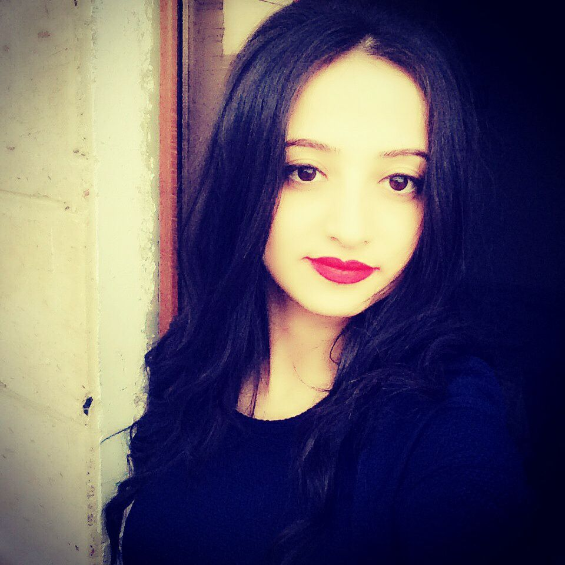

Արվեստի կառավարիչ(Պռոդյուսեր)

Մարինե Կիրակոսյան
marine.kirakosyan1995@gmail.com
Ես Մաշան եմ : Սովորում եմ թատրոնի և կինոյի պետական ինստիտուտում:Ընդունվելու ժամանակ դեռ այնքան լավ չէի հասկանում իմ մասնագիտության ամենահետաքրքրաշարժ կողմերը , բայց ժամանակի ընթացքում այն շատ սիրեցի և ինձ համար այն բացահայտեցի նոր կողմերից: Հիմա ես պատրաստ եմ նորանոր առաջարկների ու հնարավորությունների համար: Կարծում եմ , որ ապագան արվեստագետի ուղղակիորեն կապված է պռոդյուսերի աշխատանքի հետ և լավ պռոդյուսերը կարող է ստեղծել լավ և հետաքրքրիր պռոդուկտ: